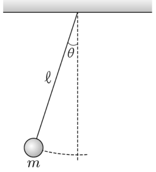

조화 진동자의 사다리 연산자 — ⟨T⟩, ⟨V⟩와 불확정성, 단진자의 비조화 섭동 θ⁴의 1차 보정 에너지Ladder operators of the harmonic oscillator: ⟨T⟩, ⟨V⟩, uncertainty · first-order correction from the −θ⁴/24 pendulum anharmonicity
자연에서 관찰되는 많은 진동 현상은 단조화 진동으로 단순화하여 이해할 수 있다. <자료 1>은 단조화 진동자의 고유함수와 고유에너지를 구하는 과정의 일부를, <자료 2>는 중력장에서의 진자 운동을 나타낸 것이다. 【20점】
1차원 단조화 진동을 하는 질량 \(m\)인 입자의 해밀토니안은 \(H_0=T+V=\dfrac{p^2}{2m}+\dfrac12m\omega^2x^2\)이며, \(x\)와 \(p\)의 선형 결합인 두 연산자
\[a=\sqrt{\frac{m\omega}{2\hbar}}\,x+i\frac{p}{\sqrt{2m\omega\hbar}},\qquad a^\dagger=\sqrt{\frac{m\omega}{2\hbar}}\,x-i\frac{p}{\sqrt{2m\omega\hbar}}\]는 \(H_0\)의 규격화된 고유함수 \(\psi_n\)에 대해 다음 관계를 만족한다.
\[a\psi_n=\sqrt n\,\psi_{n-1},\qquad a^\dagger\psi_n=\sqrt{n+1}\,\psi_{n+1},\qquad n=0,1,2,\cdots\]여기서 바닥상태의 고유함수는 \(\psi_0(x)=\left(\dfrac{m\omega}{\pi\hbar}\right)^{1/4}\exp\left(-\dfrac{m\omega}{2\hbar}x^2\right)\)이다.
그림은 중력장 내에서 질량 \(m\)인 입자가 길이 \(\ell\)인 실에 매달려 연직면 내에서 운동하는 것을 나타낸 것이다.
이 계의 퍼텐셜에너지는 \(U=mg\ell(1-\cos\theta)\)이고, \(\theta\ll1\)일 때 이 진자 운동은 해밀토니안이 \(H_0=\dfrac12m\ell^2\dot\theta^2+\dfrac12mg\ell\theta^2\)인 단조화 진동으로 단순화할 수 있다. 이를 보정하는 첫 번째 섭동항은 \(H'=-\dfrac1{24}mg\ell\theta^4\)이다.
<자료 1>을 이용하여 운동에너지 \(T\)와 퍼텐셜에너지 \(V\)를 \(a\)와 \(a^\dagger\)로 표현하여 \(n\)번째 상태에 대한 기댓값을 각각 구한 다음, 이로부터 위치와 운동량에 대한 불확정성 원리가 만족됨을 보이시오. 또한 <자료 2>에서 \(H'\)을 구하는 과정을 기술하고, <자료 1>을 참고하여 \(H'\)에 의한 바닥상태의 1차 보정 에너지를 구하시오. (단, \(\displaystyle\int_{-\infty}^{\infty}x^4e^{-ax^2}dx=\frac34\sqrt{\frac{\pi}{a^5}}\)이다.) 【20점】 (아래 두 소문항의 배점 10·10은 학습지용 분할 — 원문은 20점 한 문항)

운동에너지 \(T\)와 퍼텐셜에너지 \(V\)를 \(a\)와 \(a^\dagger\)로 표현하여 \(n\)번째 상태에 대한 기댓값을 각각 구한 다음, 이로부터 위치와 운동량에 대한 불확정성 원리가 만족됨을 보이시오.
<자료 2>에서 \(H'\)을 구하는 과정을 기술하고, <자료 1>을 참고하여 \(H'\)에 의한 바닥상태의 1차 보정 에너지를 구하시오.
(확장) 고전역학에서 같은 섭동 \(-\tfrac{1}{24}mg\ell\theta^4\)은 진폭 \(\theta_0\)인 진자의 주기를 어떻게 바꾸는가? 양자 보정의 부호와 비교하시오.
정답모범 답안 요약
| 문항 | 모범 답안 (요약) | 검증 |
|---|---|---|
| 4-(1) | \(T=-\dfrac{\hbar\omega}4(a-a^\dagger)^2\), \(V=\dfrac{\hbar\omega}4(a+a^\dagger)^2\); \(\langle T\rangle_n=\langle V\rangle_n=\dfrac12\left(n+\dfrac12\right)\hbar\omega\); \(\Delta x\Delta p=\left(n+\dfrac12\right)\hbar\ge\hbar/2\) (n = 0에서 등호). | 모의실험: 유한 차분 해밀토니안의 고유 함수로 ⟨T⟩, ⟨V⟩, ΔxΔp를 수치 계산해 일치 확인 |
| 4-(2) | \(U\)를 θ⁴까지 전개: \(H'=-\dfrac{1}{24}mg\ell\theta^4\). \(m\to m\ell^2\), \(\omega=\sqrt{g/\ell}\), \(\langle\theta^4\rangle_0=\dfrac{3\hbar^2}{4m^2\ell^4\omega^2}\) → \(E^{(1)}_0=-\dfrac{\hbar^2}{32m\ell^2}\). | 모의실험: θ 공간 유한 차분으로 실제 퍼텐셜 mgℓ(1−cosθ)의 바닥 에너지를 정밀 계산 — E − ½ħω가 −ħ²/(32mℓ²)에 수렴(작은 ħ/(mℓ²ω)) |
| 확장 1 확장 | 주기 \(T\approx T_0(1+\theta_0^2/16)\) 증가 — 양자 보정이 음수(준위 하강)인 것과 같은 방향. | 모의실험 3D 진자의 큰 진폭 주기 |
1소문항별 풀이 (AI 모범 답안)
4-(1) 10점
운동에너지 \(T\)와 퍼텐셜에너지 \(V\)를 \(a\)와 \(a^\dagger\)로 표현하여 \(n\)번째 상태에 대한 기댓값을 각각 구한 다음, 이로부터 위치와 운동량에 대한 불확정성 원리가 만족됨을 보이시오.
1x, p를 a, a†로
\(x=\sqrt{\dfrac{\hbar}{2m\omega}}(a+a^\dagger)\), \(p=-i\sqrt{\dfrac{m\omega\hbar}{2}}(a-a^\dagger)\).
\(T=\dfrac{p^2}{2m}=-\dfrac{\hbar\omega}{4}(a-a^\dagger)^2=-\dfrac{\hbar\omega}4(a^2+a^{\dagger2}-aa^\dagger-a^\dagger a)\), \(V=\dfrac12m\omega^2x^2=\dfrac{\hbar\omega}4(a^2+a^{\dagger2}+aa^\dagger+a^\dagger a)\).
2기댓값
\(a^2\psi_n\propto\psi_{n-2}\), \(a^{\dagger2}\psi_n\propto\psi_{n+2}\) → 직교성으로 기댓값 0. \(\langle a^\dagger a\rangle=n\), \(\langle aa^\dagger\rangle=n+1\).
\(\langle T\rangle_n=\dfrac{\hbar\omega}{4}(2n+1)=\dfrac12\left(n+\dfrac12\right)\hbar\omega=\langle V\rangle_n\) — 합 \(E_n=(n+\tfrac12)\hbar\omega\) (비리얼 정리와 일치).
3불확정성
\(\langle x\rangle=\langle p\rangle=0\) (a, a† 한 번 → 직교). \((\Delta x)^2=\langle x^2\rangle=\dfrac{2\langle V\rangle}{m\omega^2}=\left(n+\tfrac12\right)\dfrac{\hbar}{m\omega}\), \((\Delta p)^2=2m\langle T\rangle=\left(n+\tfrac12\right)m\hbar\omega\).
\(\Delta x\Delta p=\left(n+\dfrac12\right)\hbar\ge\dfrac\hbar2\) — 바닥상태(n = 0)에서 등호(최소 불확정 상태).
\(aa^\dagger\)와 \(a^\dagger a\)를 같다고 보아 \(\langle T\rangle=\tfrac12n\hbar\omega\)로 쓰는 실수(교환자 \([a,a^\dagger]=1\)). ⟨x⟩ = 0을 확인하지 않고 \(\Delta x=\sqrt{\langle x^2\rangle}\)로 쓰는 것은 근거가 부족하다.
4-(2) 10점
<자료 2>에서 \(H'\)을 구하는 과정을 기술하고, <자료 1>을 참고하여 \(H'\)에 의한 바닥상태의 1차 보정 에너지를 구하시오.
1H′의 유도
\(\cos\theta=1-\dfrac{\theta^2}{2!}+\dfrac{\theta^4}{4!}-\cdots\) → \(U=mg\ell(1-\cos\theta)=\dfrac12mg\ell\theta^2-\dfrac1{24}mg\ell\theta^4+\cdots\). 운동 에너지 \(\tfrac12m\ell^2\dot\theta^2\)(또는 \(p_\theta^2/2m\ell^2\))와 θ² 항이 \(H_0\), 다음 항이 \(H'=-\dfrac{1}{24}mg\ell\theta^4\).
2H₀의 대응
\(H_0=\dfrac{p_\theta^2}{2(m\ell^2)}+\dfrac12(m\ell^2)\omega^2\theta^2\), \(\omega=\sqrt{g/\ell}\) → <자료 1>에서 \(m\to m\ell^2\), \(x\to\theta\). 바닥 상태 \(\psi_0(\theta)=\left(\dfrac{\alpha}{\pi}\right)^{1/4}e^{-\alpha\theta^2/2}\), \(\alpha=\dfrac{m\ell^2\omega}{\hbar}=\dfrac{m\sqrt{g\ell^3}}{\hbar}\).
31차 보정
\(\langle\theta^4\rangle_0=\sqrt{\dfrac\alpha\pi}\int\theta^4e^{-\alpha\theta^2}d\theta=\sqrt{\dfrac\alpha\pi}\cdot\dfrac34\sqrt{\dfrac{\pi}{\alpha^5}}=\dfrac{3}{4\alpha^2}=\dfrac{3\hbar^2}{4m^2\ell^3g}\).
\(E^{(1)}_0=-\dfrac{mg\ell}{24}\cdot\dfrac{3\hbar^2}{4m^2\ell^3g}=\boxed{-\dfrac{\hbar^2}{32m\ell^2}}\) \(\left(=-\dfrac{\hbar\omega}{32}\cdot\dfrac{\hbar}{m\ell^2\omega}\right)\). (사다리 연산자로: \(\theta^4\propto(a+a^\dagger)^4\), \(\langle0|(a+a^\dagger)^4|0\rangle=3\) — 같은 결과)
4의미
음수 → 실제 진자의 퍼텐셜은 θ²보다 완만(\(1-\cos\theta\lt \theta^2/2\))해 에너지 준위가 조금 내려간다. 상대 크기 \(E^{(1)}_0/(\tfrac12\hbar\omega)=-\dfrac{\hbar}{16m\ell^2\omega}\) — 거시적 진자에서는 극히 작다.
<자료 1>의 \(m\)을 그대로 써서 \(\alpha=m\omega/\hbar\)로 계산(좌표가 θ이므로 ‘질량’은 \(m\ell^2\)). 적분 공식에서 \(a=\alpha\)(지수 \(e^{-\alpha\theta^2}\), 규격화된 ψ₀²의 지수)임을 놓쳐 2배 차이가 나는 경우.
확장 1확장 문항
(확장) 고전역학에서 같은 섭동 \(-\tfrac{1}{24}mg\ell\theta^4\)은 진폭 \(\theta_0\)인 진자의 주기를 어떻게 바꾸는가? 양자 보정의 부호와 비교하시오.
1비교
\(T\approx T_0\left(1+\dfrac{\theta_0^2}{16}\right)\) — 진폭이 클수록 느리다. 양자역학에서는 \(E_n\)이 \((n+\tfrac12)\hbar\omega\)보다 내려가고(1차 보정 \(\propto-(2n^2+2n+1)\)) 준위 간격이 줄어드는 것이 대응한다.
2채점 기준 (예시)
공식 채점 기준은 공개되지 않는다. 배점과 답안 요소를 바탕으로 만든 예시 채점 기준이다.
| 문항 | 배점 | 채점 요소 (예시 답안의 핵심 표현) |
|---|---|---|
| 4-(1) | 2 | x, p를 a, a†로 표현 |
| 4-(1) | 2 | T, V를 a, a†로 표현 |
| 4-(1) | 3 | ⟨T⟩ = ⟨V⟩ = ½(n+½)ħω 계산(직교성 근거) |
| 4-(1) | 3 | Δx, Δp 계산 → ΔxΔp = (n+½)ħ ≥ ħ/2 |
| 4-(2) | 3 | cos θ 전개로 H′ 유도 과정 기술 |
| 4-(2) | 2 | H₀와 자료 1 대응(m → mℓ², ω² = g/ℓ) |
| 4-(2) | 3 | ⟨θ⁴⟩₀ = 3/(4α²) 가우스 적분 |
| 4-(2) | 2 | E₀⁽¹⁾ = −ħ²/(32mℓ²) |
| 합계 20점 | ||
3출제 의도·검토
출제 의도
- 사다리 연산자를 이용한 대수적 계산(기댓값, 불확정성), 테일러 전개로 섭동항 도출, 1차 섭동 이론의 표준 적용.
- <자료 1>의 결과를 다른 변수(θ)와 다른 ‘질량’(mℓ²)의 계로 옮겨 쓰는 일반화 능력.
검토 의견
43D 모의실험 — 4번: 단진자와 양자 조화 진동자의 비조화 보정 (Space 재생/정지 · R 처음으로 · F 전체화면)
5고등학생 지도 — 고교 교육과정과 잇기
고교 교육과정과의 연결
- 물리학Ⅱ 단진자(작은 진폭 근사)·물리학Ⅱ 불확정성 원리(2015)
- 대학 양자역학 조화 진동자·섭동 이론
고등학생용 변형 문항
- 단진자의 주기는 진폭이 클 때도 2π√(ℓ/g)일까? (아니오 — 조금 길어진다)
- 위치를 정확히 알수록 운동량은 어떻게 될까? 바닥 상태에서 ΔxΔp는?
- cos θ ≈ 1 − θ²/2는 θ = 30°에서 몇 % 오차? (약 0.4 %)
6수업 활용 안내
수업 흐름 (50분)
- 복습 (5분) — 단진자 작은 진폭 근사, 테일러 전개
- 사다리 연산자 계산 (15분) — x, p, T, V를 a, a†로 — 기댓값과 불확정성
- 섭동항 유도 (10분) — H′ = −mgℓθ⁴/24, 자료 1과의 대응(m → mℓ²)
- 1차 보정 (12분) — 가우스 적분 / (a + a†)⁴ 두 방법, 모의실험 수치 비교
- 정리 (8분) — 고전 주기 변화와 양자 보정의 대응
자주 나오는 오개념
- “aa† = a†a”(교환자 무시)
- “⟨x⟩ = 0이면 Δx = 0”
- “자료 1의 m을 그대로 쓴다”(좌표 θ의 유효 질량 mℓ² 누락)
- “섭동 보정은 항상 양수”
평가 포인트
- a, a†로 연산자를 표현하고 직교성으로 기댓값을 구하는가
- 불확정성 등호 조건을 언급하는가
- 테일러 전개와 변수 대응을 정확히 하는가
- 가우스 적분으로 ⟨θ⁴⟩를 구하는가
더 나아가기
n번째 상태의 1차 보정 \(E^{(1)}_n=-\dfrac{\hbar^2}{32m\ell^2}(2n^2+2n+1)\)을 (a + a†)⁴의 기댓값으로 유도하고, 준위 간격이 n에 따라 줄어드는 것을 고전 주기 증가와 연결하는 과제.